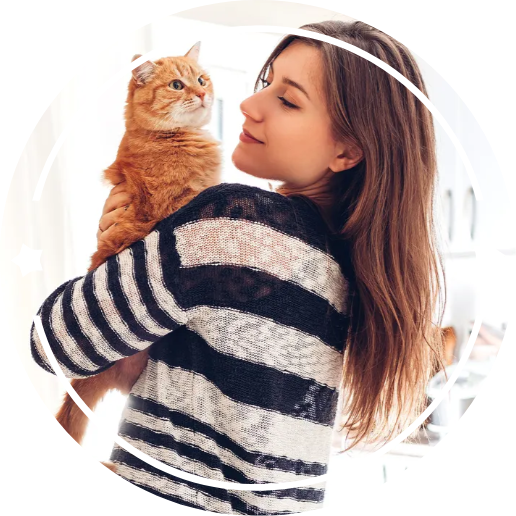
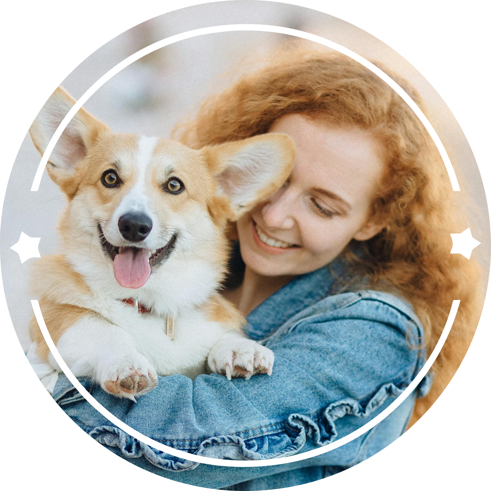

Bienvenidos a Hallando Huellas
Reúnete con tu mascota de manera rápida y segura.
Servicio gratuito para proteger a tu mascota

Servicio gratuito para proteger a tu mascota

"Brindamos información actualizada del paradero de tu mascota"
.png)
"Reunimos de forma accesible y rápida todos los datos de tu mascota por medio del collar QR"
"Nos dedicamos a la protección y bienestar de los animales junto a distintas ONG"
"Todo nuestro personal proporciona soporte técnico en todo momento"

"Aseguramos el bienestar de las mascotas en su tiempo fuera de casa, en caso de extravío"
.png)
"Nuestro sistema ofrece a su veterinario de confianza acceso del historial médico"
"Cuando perdí a mi gato Tomás, pensé que nunca lo volvería a ver. Pero gracias a Hallando Huellas, alguien lo encontró y me contactó enseguida. Es un servicio que realmente funciona y lo recomiendo a todos los dueños de mascotas."
"Hallando Huellas hizo que recuperar a mi perro perdido fuera mucho más fácil. La función de geolocalización me dio tranquilidad al saber exactamente dónde había sido encontrado. No podría estar más agradecida."

"Gracias a Hallando Huellas, pudimos encontrar a nuestra gatita Lucy en cuestión de horas. El código QR en su collar permitió que la persona que la encontró nos contactara de inmediato. No tengo palabras para agradecer esta increíble herramienta."
Descubre cómo Hallando Huellas puede ayudarte a encontrar a tu mascota perdida. ¡Así que no te pierdas la oportunidad de sentirte respaldado al perder tu mascota!


Ituzaingó
Buenos Aires - Argentina
Tel: 1167008959 | hallandohuellas@gmail.com